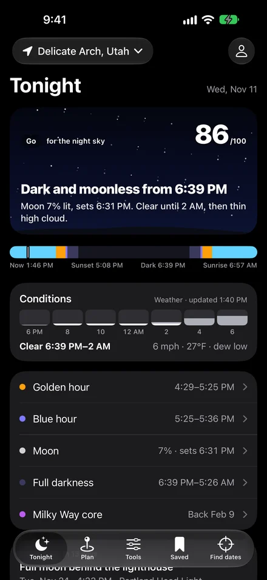
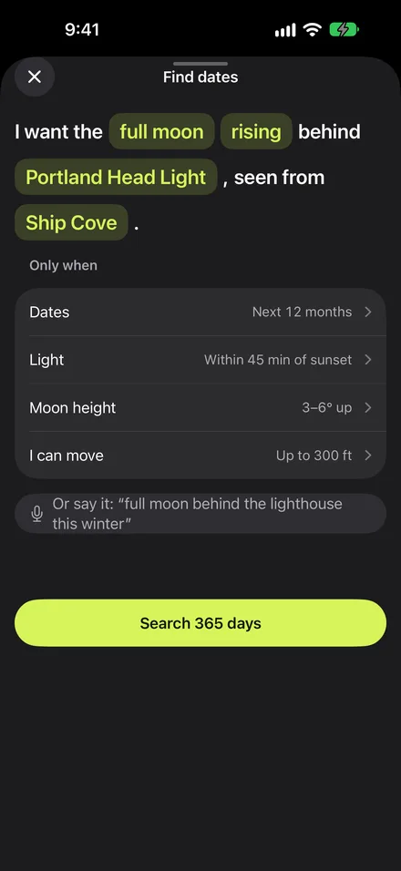
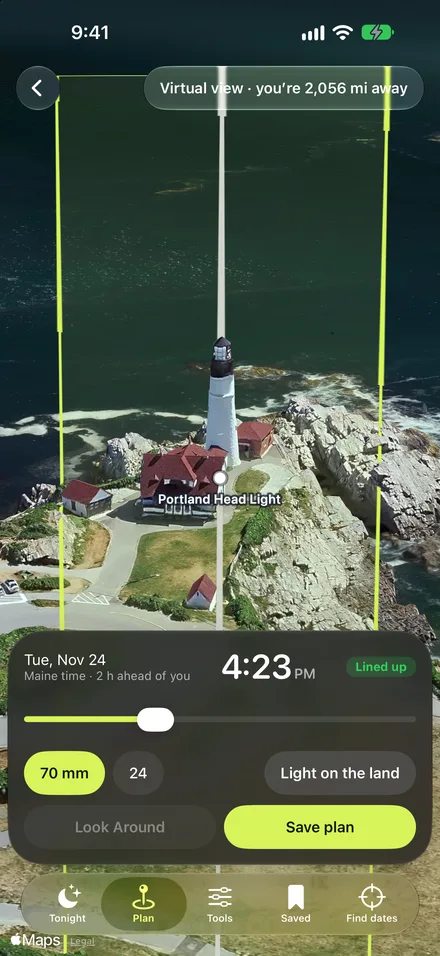
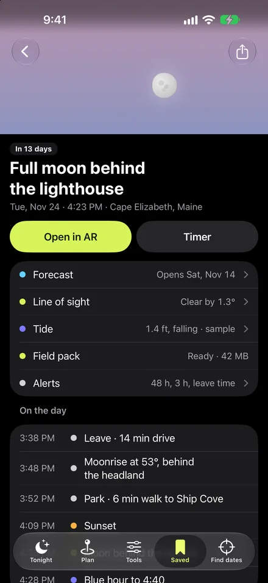

Know the minute.
Pick a landmark, choose the sun or the moon, and Predawn finds the dates it lines up, where to stand and what to dial in. Then it checks the sky and gets you there on time.

Plan the picture, not the paperwork
Most planners give you a map full of lines and leave the maths to you. Predawn starts with the answer.
An answer for tonight
Go, Check or No for the night sky, with the reason: the moon, how long it's truly dark, and the cloud forecast hour by hour.
Dates from a sentence
"Full moon rising behind the lighthouse, near sunset." Predawn searches the year and lists every match, best light first, with how far to step left or right.
Will anything block it?
Line of sight checks the ground between you and the horizon and tells you when the moon clears the rocks or the sun clears the ridge.
See it from anywhere
Scout shows a 3D view from your spot with the light at the minute you chose. On site, the camera view shows where the sun and moon will rise.
Gets you there on time
Leave-now and wake alarms from your drive and walk, a countdown in the Dynamic Island, and a forecast re-check 48 and 3 hours before.
Built for the dark
Red night keeps your eyes adapted. Big targets for gloved hands. Saved plans keep working without signal.
A look inside
Real screens from the app, planning a full moon behind Portland Head Light, Maine.





Every tool you reach for
Set your camera and lens once. Every calculator starts from your gear and your plan.
- Long exposure (ND filters)
- Sharp stars (NPF and 500 rule)
- Star trails
- Time-lapse
- Exposure match
- Sun and moon exposure
- Hyperfocal distance
- Depth of field
- Focus stacking
- Field of view
- Panorama
- Subject size
- Lens match
- Shadow length
- Polar alignment
Free to start
Tonight, planning, Find dates, the camera view and most tools are free. Pro is for the night shooters and the obsessive planners.
Free
- Tonight's verdict and every light band
- Plan map with sun and moon lines, line of sight and clouds
- Find dates and matches
- Camera view and Scout
- Most calculators
Pro, yearly
- 1-week free trial for new subscribers
- Milky Way, shadow and tide layers
- Forecast alerts and cloud by height
- More than one Field pack
- NOAA tides, polar alignment, star trails, time-lapse
- Apple Watch app
Pro, once
- Everything in Pro
- One purchase, no subscription
- Yours to keep
US prices; they may differ in your country. The yearly plan renews automatically unless cancelled at least 24 hours before it ends. Manage it in your Apple Account settings.
Private by default
No account
Nothing to sign up for.
On your iPhone
Plans, places and gear stay on the device.
No tracking
No ads, no analytics, no third-party code.
No server of ours
Forecasts from Apple Weather, maps from Apple Maps, terrain from public Copernicus files. Only Apple sees your exact spot.
Know the minute.
Predawn for iPhone. Requires iOS 26 or later.
Download on the App Store